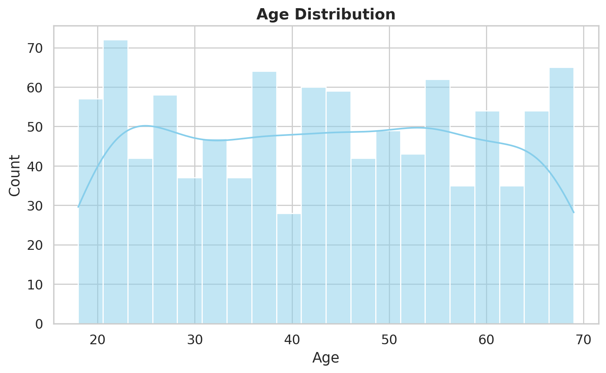
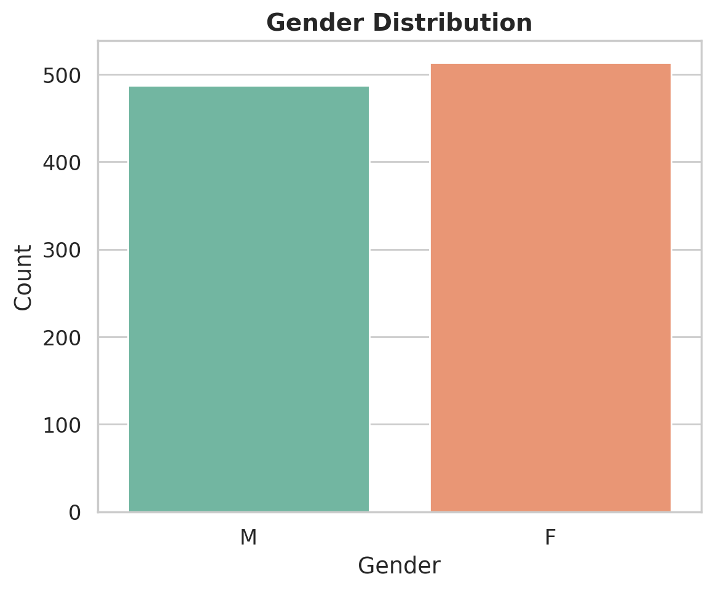
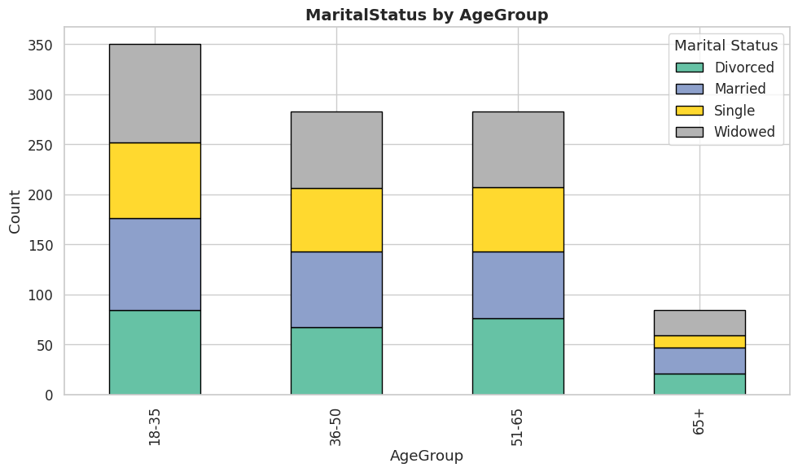
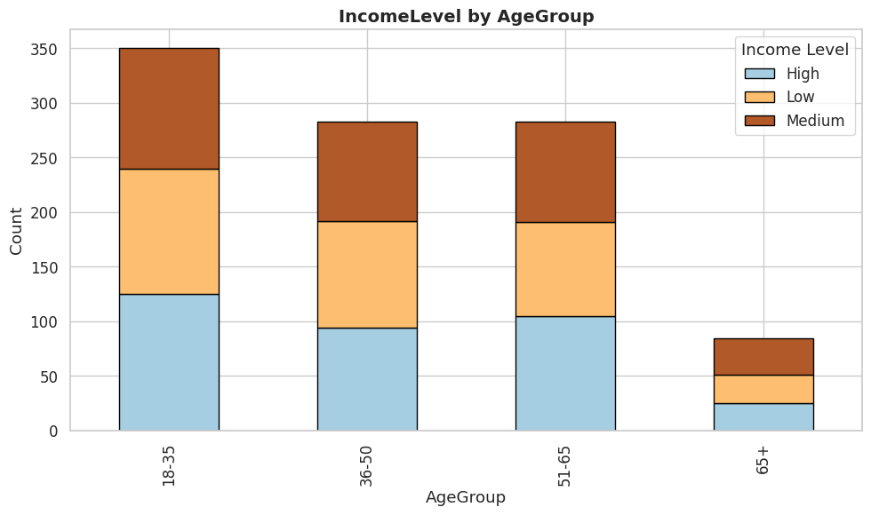
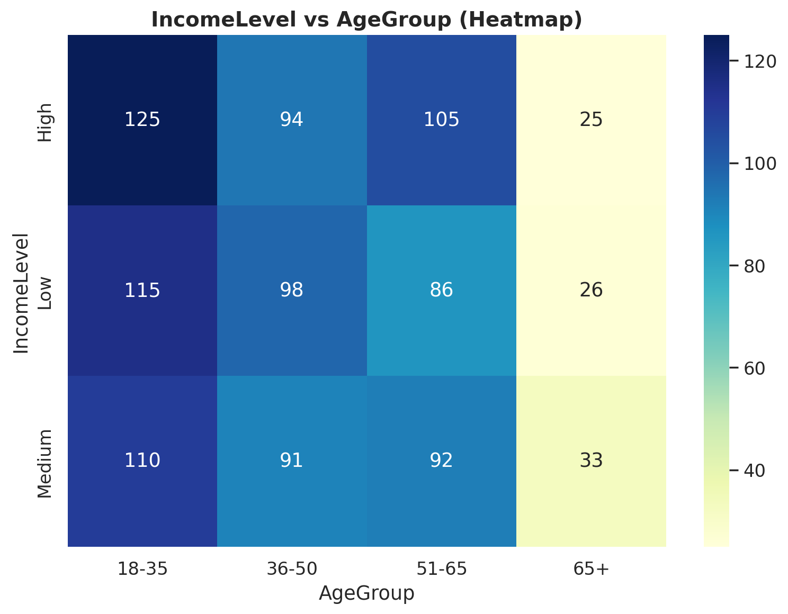

Customer Churn Prediction#
1. Introduction#
The goal of this project is to prepare data for customer churn prediction. We checked the data, did EDA (Exploratory Data Analysis), and suggested preprocessing steps.
Dataset description:
-
1000 rows
-
5 columns:
-
CustomerID – unique ID for each customer
-
Age – customer age (18–65)
-
Gender – M or F
-
MaritalStatus – Single, Married, Divorced, Widowed
-
IncomeLevel – Low, Medium, High
-
2. Exploratory Data Analysis (EDA)#
2.1 Age Distribution#
-
Customer ages are mainly between 18 and 65.
-
The age distribution is quite even, but some ages look too frequent (synthetic data sign).

2.2 Gender Distribution#
- Gender is almost equal (balanced). 
2.3 MaritalStatus vs IncomeLevel#
| IncomeLevel | Divorced | Married | Single | Widowed |
|---|---|---|---|---|
| High | 82 | 98 | 75 | 94 |
| Low | 87 | 86 | 62 | 90 |
| Medium | 79 | 77 | 78 | 92 |
Observation:
-
High and Medium income are evenly spread in all marital groups.
-
Low income is similar but Single customers are fewer.
2.4 MaritalStatus vs AgeGroup#
| AgeGroup | Divorced | Married | Single | Widowed |
|---|---|---|---|---|
| <18 | 4 | 8 | 7 | 5 |
| 18–35 | 80 | 84 | 69 | 93 |
| 36–50 | 67 | 76 | 63 | 77 |
| 51–65 | 76 | 67 | 64 | 76 |
| 65+ | 21 | 26 | 12 | 25 |

Observation:
-
Age group 18–35 is the largest in all marital groups.
-
Widowed is more common in young people (synthetic data).
-
Age 65+ has mostly Married and Widowed.
2.5 IncomeLevel vs AgeGroup#
| AgeGroup | High | Low | Medium |
|---|---|---|---|
| <18 | 4 | 10 | 10 |
| 18–35 | 121 | 105 | 100 |
| 36–50 | 94 | 98 | 91 |
| 51–65 | 105 | 86 | 92 |
| 65+ | 25 | 26 | 33 |
| Observation: |
-
High income is mainly 18–35 (121 people).
-
Low and Medium incomes are balanced across ages.
-
Age 65+ mostly has Medium income.


3. Data Cleaning and Preprocessing#
-
Missing values: None.
-
Outliers: Age has no extreme values (range 18–65).
-
Feature Engineering: Added
AgeGroup(<18, 18–35, 36–50, 51–65, 65+). -
Encoding:
-
Gender → Binary (M=1, F=0)
-
MaritalStatus, IncomeLevel, AgeGroup → One-hot encoding
-
-
Normalization: Age can be scaled using StandardScaler or MinMaxScaler.
-
Redundant Columns: CustomerID is not needed for the model.
4. Findings (Main observations)#
-
Age is strongly related to IncomeLevel and MaritalStatus.
-
Age 18–35 dominates both marital status and high income groups.
-
Widowed in young people and many young high-income customers are signs of synthetic data.
-
Dataset does not fully match real-world patterns but is useful for model preparation.